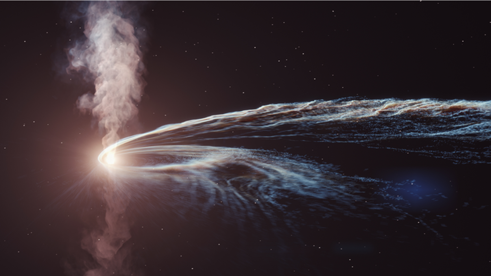
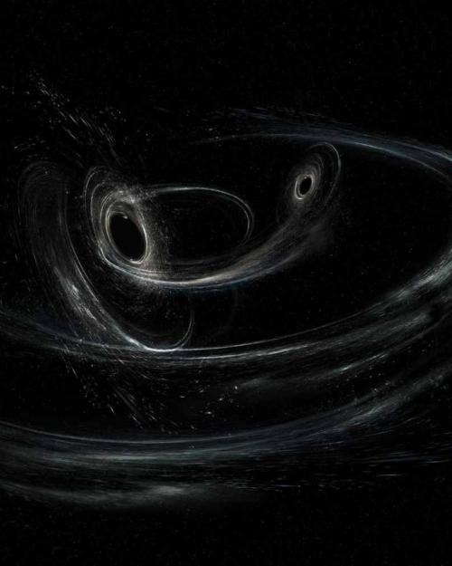
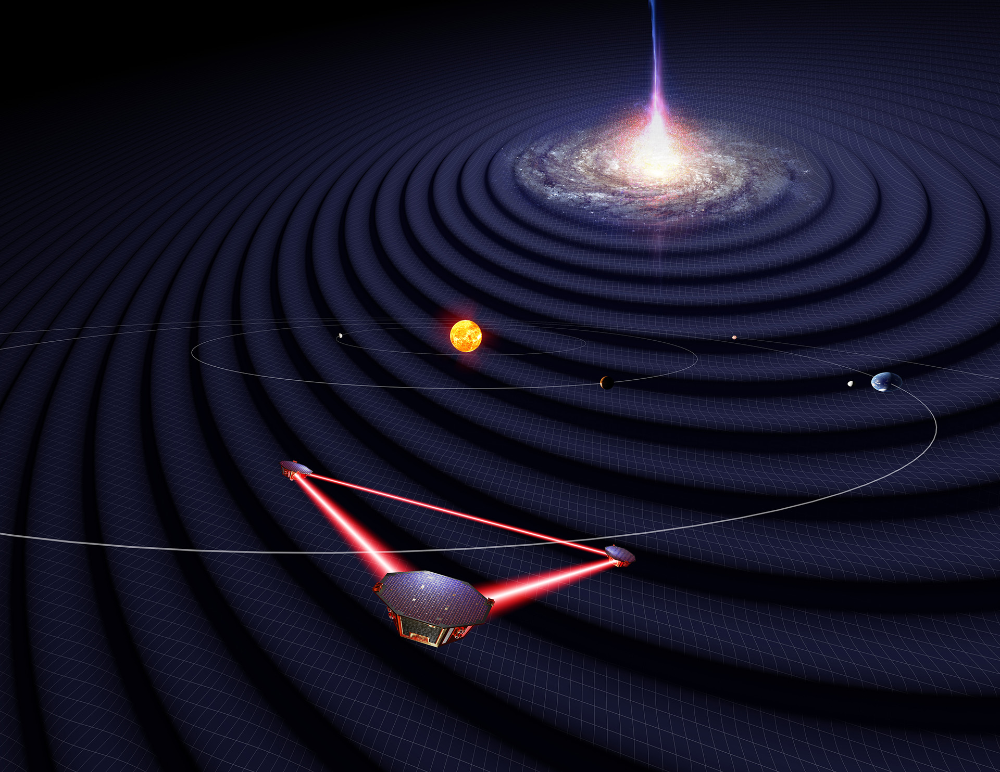

Tidal disruption events
Spin and inclination effects on tidal disruption of a star by a supermassive black hole.
Hello! Welcome to my webpage.
I am a graduate student at The University of Texas at Dallas
working as a research assistant with Dr. Michael Kesden.
I am interested in understanding the observational imprints of the spin of the black holes on various
astrophysical phenomenas. I primarily focus on tidal disruption events by spinning supermassive black holes
and precessional effects on gravitational wave signals from binary black holes.
Feel free to ask me about my research, collaborations, or any other queries you might have, I would be happy to help!
You can find my contact information below.

Spin and inclination effects on tidal disruption of a star by a supermassive black hole.

Effects of spin dynamics of the binary on gravitational wave signals that are observed by the LVK network.

Spin, inclination, and eccentricity interplay on the GW signals from a stellar mass compact object inspiralling towards a supermassive black hole.
Here are slides from some of the talks I have given at various conferences.